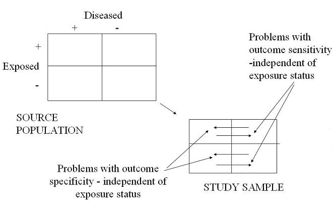
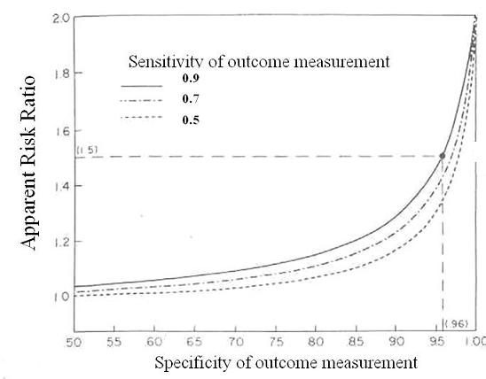
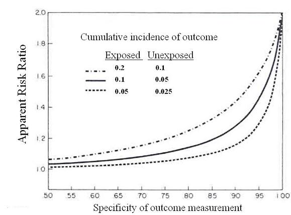

Example of Misclassification Bias
Non-Differential Misclassification of Outcome
Lead Author(s): Jeff Martin, MD
Misclassification of the outcome results in measurement bias.
Diagram
When the degree of misclassification of outcome is the same in the exposed vs unexposed groups, i.e. independent of exposure, this is called non differential misclassification of outcome.
As shown in the diagram (2x2 table)below, the arrows in cells 2 and 4 depict diseased persons misclassified as non-diseased - in other words problems with sensitivity.
- The arrows in cells 1 and 3 depict non-diseased persons who are mistakenly misclassified as diseased - in other words, problems with specificity.
- Thus, these are non-differential misclassification of outcome.

The figure below from Copeland (1977) looks at the effects of imperfect specificity and sensitivity in the measurement of outcome.
- Here, we assume that the true risk ratio is 2.0 and that the cumulative incidence of disease in the unexposed is 5%.
- The lines show what happens when specificity is changed from 50% to 100%, under 3 different assumptions of sensitivity, 90%, 70%, and 50%.

The figure illustrates that you take a pretty big hit in the observed risk ratio with only subtle changes in specificity.
Also, there is not that much dependence on sensitivity.
In the figure below, Copeland (1977) shows the importance of the underlying frequency of the outcome, in other words, the cumulative incidence of outcome on the results.
Here are three scenarios of where the true risk ratio is 2.0.
- In the bottom curve, the incidence of outcome in the exposed group is 0.05 and in the unexposed group 0.025.
- Overall outcome incidence is doubled in each successive curve.

Sensitivity Fixed - Changes in Specificity
The sensitivity of the outcome measurement is held fixed at a realistic 90% and the curves show you what happen as specificity falls.
- You can see that when you are dealing with an outcome with a cumulative incidence of around 5% in the exposed, you begin to take rapid hit as specificity falls.
- Just a 5% fall in specificity could leave you with an observed risk ratio of 1.2 – good luck in picking that up.
This dependence upon outcome incidence when talking about misclassification of outcome is akin to the situation of misclassification of exposure where there is a dependence upon overall prevalence of exposure.
- When there is a lot of imbalance between key cells, the effects of misclassification can become very large.
References
Copeland, K. T., Checkoway, H., McMichael, A. J., & Holbrook, R. H. (1977). Bias due to misclassification in the estimation of relative risk. Am J Epidemiol, 105 (5), 488-495.